6.1.8 Sistemas encriptación hardware (TPM/HSM)
1. TPM
TPM (Trusted Platform Module) es un criptoprocesador seguro para para almacenar y verificar datos biométricos.
Este chip es obligatorio para equipos con Windows 11.
1.1. Características
Sus principales características son:
- Es un chip con memoria volátil y no volátil.
- Contiene un algoritmo para la generación de claves y cadenas aleatorias de códigos cifrados.
- Implementa funciones criptográficas para autenticación mediante firmas digitales o datos biométricos del usuario.
1.2 Funciones
Entre sus funciones se destacan las siguientes:
- Almacenado de contraseñas de administrador y control remoto.
- Cifrado de unidades de almacenamiento de datos.
- Certificados digitales y firmas digitales.
- Cifrado individual de carpetas.
- Claves de servidores de correo y sitios web seguros.
- Datos biométricos para el acceso.
1.3 Componentes
Los componentes internos de un módulo de plataforma de confianza son:
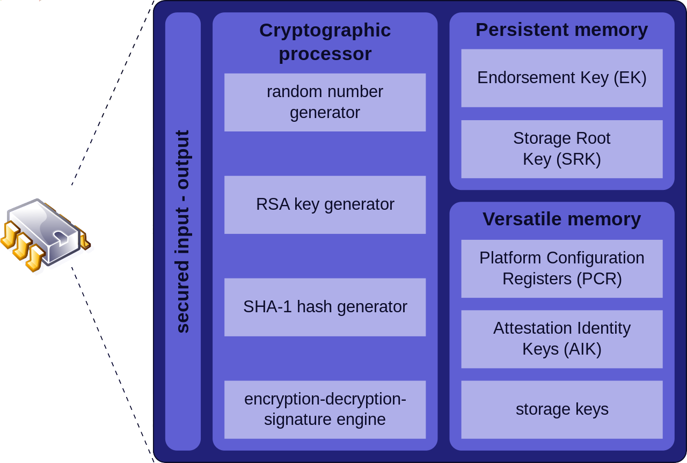
Lo que se almacena en el chip es:
- Clave RSA Endorsemente Key (EK).
- Clave RSA Storage Root Key (SRK).
- Clave RSA Attestation Identity Key (AIK).
- Una AIK es similar a la EK excepto que:
- Un TPM puede tener un número ilimitado de ellas.
- Son creadas por el propietario del TPM.
El par EK se usa para identificar el ordenador a su fabricante:
|
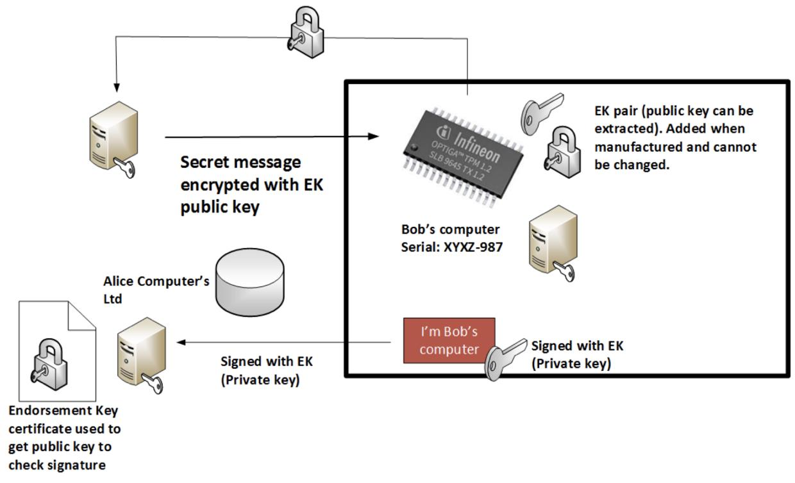 |
|
Para el SRK, cada usuario crea sus propias llaves, y cada nuevo usuario tendrá un par de llaves único. Este par de claves se utiliza típicamente para proteger la clave de cifrado que se utiliza para cifrar la unidad de disco. |
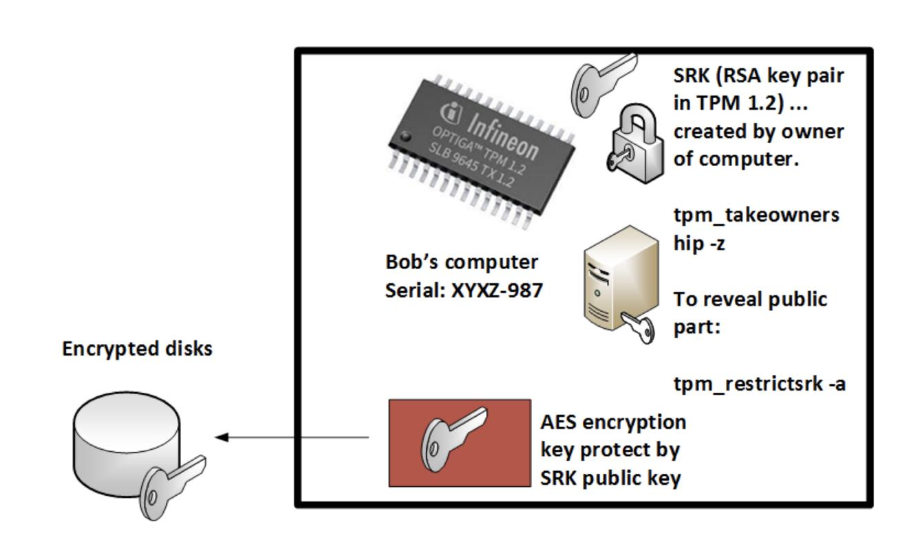 |
1.4 ¿Exento de problemas?
- CVE-2018-6622
- CVE-2017-16837
- Utilidad para comprobar ambas: Napper
- CVE-2019-11090
- CVE-2019-16863
Fuentes:
- https://www.bleepingcomputer.com/news/security/researchers-detail-two-new-attacks-on-tpm-chips/
- https://thehackernews.com/2019/11/tpm-encryption-keys-hacking.html
Vulnerabilidad de ROCA (Return of the Coppersmith Attack):
- Identificó que la clave privada podía derivarse de la clave pública, ya que los números primos de RSA se generaron con un método débil.
- Casi hizo caer el sistema de identificación electrónica de Estonia, que obligó a cambiar e implementó un sistema basado en dispositivos móviles, y superó los problemas de ROCA.
1.5 TPM 1.2 vs TPM 2.0
|
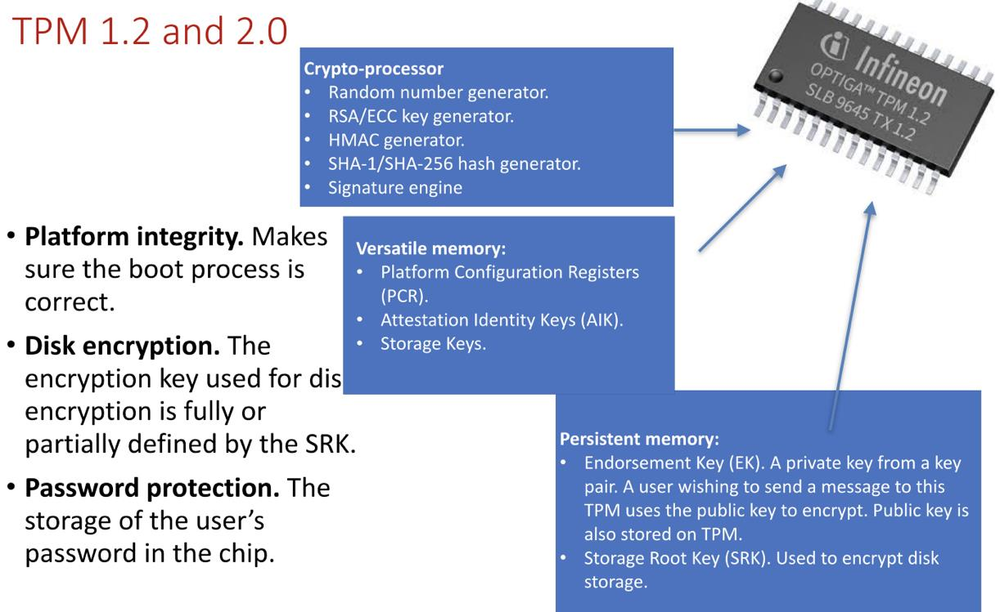 |
1.6 Apple T2
Apple usa el chip T2 64-bit ARMv8 chip que corre un Sistema Operativo llamado bridgeOS 2.0.
T2 proporciona un enclave seguro para la claves cifradas y datos biométricos, dando la posibilidad de bloquear el proceso de arranque del ordenador.
Maneja las funciones del sistema de cámara, el control de audio y se encarga del cifrado-descifrado sobre la marcha para la unidad SSD. También procesamiento de imágenes mejorado.
1.7 IoT
- Hacen que la integridad del dispositivo sea verificable y sostenible.
- Ayuda a proteger la cadena de suministro.
- Facilita el mantenimiento del dispositivo.
- Permite que el sistema funcione en un "modo protegido”.
- Admite solo tres raíces de confianza, pero puede cooperar con otras raíces de confianza para lograr muchas funciones clave.
Implementar TPM para IoT es diferente a TPM para PC, y será mejor, más rápido y más fácil.
| 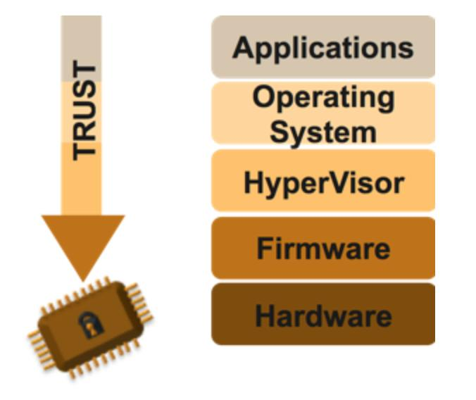 | 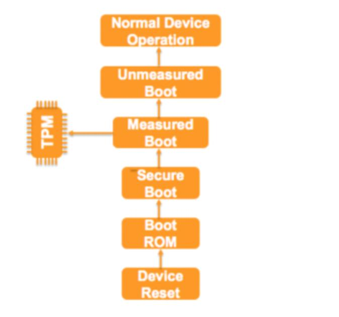 |
2. HSM
Los Hardware Security Modules o HSM son dispositivos de computación física que protege y gestiona claves digitales para la autenticación y proporciona cryptoprocessing.
Estos módulos tradicionalmente vienen en la forma de una tarjeta enchufable o un dispositivo externo que se conecta directamente a un ordenador o servidor de red.
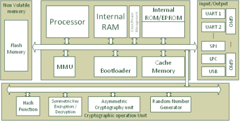
Diagrama esquemático de un HSM
2.1 Funciones de los HMS
- Generación de claves de cifrado seguro.
- Almacenamiento seguro de claves criptográficas, al menos para el nivel superior y la mayoría de las teclas sensibles, que a menudo son llamadas llaves maestras.
- Gestión de claves.
- El uso del material de datos de cifrado y sensible, por ejemplo, la realización de cifrado o digitales funciones de firma.
- Servidores de aplicaciones de descargue de completado asimétrica y el cifrado simétrico.
2.3 Ejemplos
Los HSM pueden encontrarse en tarjeta criptográfica, appliance, HSM USB (nano) y tarjeta inteligente (smart card).
| Tarjeta Criptográfica |
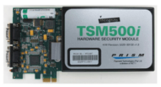 | 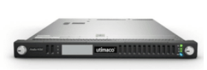 | Appliance |
| USB (nano) | 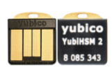 | Smart Card |
|
Appliance Con sus capacidades integrales, estos HSMs pueden apoyar un amplio abanico de aplicaciones, incluyendo autoridades |
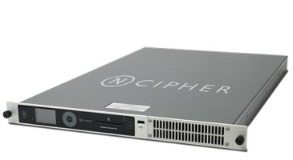 |
|
USB (nano)
|
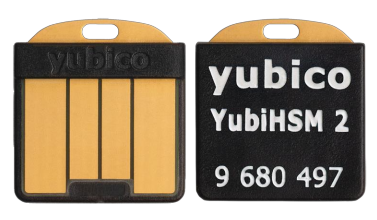 |
2.3 Tipos HSM
Uso general
|
Incluyen una gran variedad de algoritmos de encriptación estándar (simétricos, asimétricos y funciones de hash) con soporte para interconectividad vía API empleando Public-Key Cryptography Standard (PKCS) y otros. Estos dispositivos suelen ser usados en entornos de PKI, canales de HTTPS, DNSSEC, protección de datos sensibles genéricos o carteras de criptomonedas. |
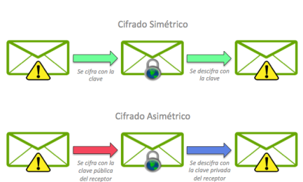 |
Transaccional y para pagos
Utilizados para la protección de transacciones de pago que incluyen el uso de PIN (generación, gestión, validación del bloque de PIN en transacciones realizadas en cajeros automáticos), la protección de transferencias electrónicas, la generación de datos para bandas magnéticas y chips EMV en procesos de producción y personalización de tarjetas, el procesamiento de transacciones de pago con tarjetas débito y crédito y la validación de tarjetas, usuarios y criptogramas.
Estos dispositivos normalmente proveen soporte criptográfico para las aplicaciones de pago de la mayoría de las marcas de tarjetas y sus interfaces de interconexión suelen ser más limitadas que los HSM de uso genérico.
Smart Cards
- Verificar el PIN introducido por el usuario coincide con el PIN de referencia conocido con el emisor de la tarjeta.
- Verificar las transacciones de crédito / tarjetas de débito mediante la comprobación de los códigos de seguridad tarjeta o mediante la realización de componentes de procesamiento principal de un EMV transacción basada en conjunción con un controlador de ATM o terminal POS.
- Apoyar un cripto-API con una tarjeta inteligente (tal como un EMV).
- Volver a cifrar un bloque de PIN para enviarlo a otro host autorización.
- Realizar segura gestión de claves.
- Soportar un protocolo de gestión de red POS ATM.
- Soportar los estándares de facto de clave de host en host | API de intercambio de datos.
- Generar e imprimir un "envío de PIN".
- Generar datos para una tarjeta de banda magnética (PVV, CVV).
- Generar un conjunto de claves de tarjetas y apoyar el proceso de personalización de tarjeta inteligente.
2.4 HSM-as-a-Service
- Microsoft Azure: Azure Dedicated HSM y Azure Key Vault.
- Google Cloud Platform: Cloud HSM y Cloud Key Management Service.
- Amazon Web Services: AWS Key Management Service (KMS) y AWS.
- CloudHSM.
- IBM: Cloud Hardware Security Module.
- Utimaco: HSM-as-a-Service.
- nCipher: nShield-as-a-Service.
- Thales: CipherTrust Cloud Key Manager.
Obra publicada con Licencia Creative Commons Reconocimiento No comercial Compartir igual 4.0